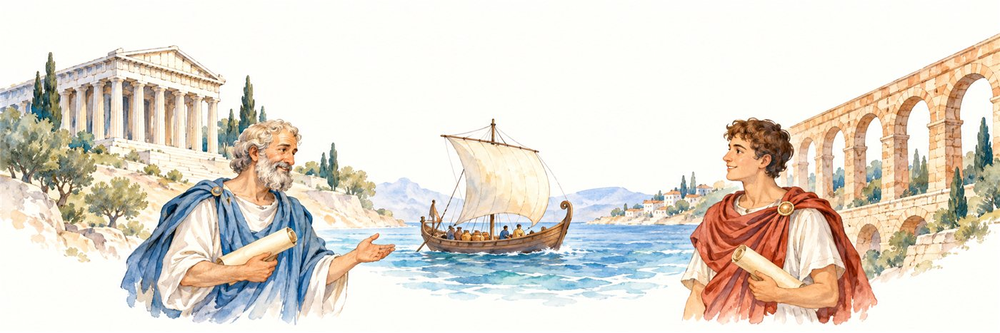

P5–7
ヨーロッパ文明のはじまり

筆者の主張のポイント
ヨーロッパ文明は、ギリシャ・ローマの文化、キリスト教、ゲルマン人の戦士の文化という三つの要素が混ざって生まれました。
筆者は、ヨーロッパが征服や移住、経済や思想の力によって、世界に大きな影響を与えてきたと説明します。今では世界中で使われている科学や技術も、その影響の一つです。
その土台となった古代ギリシャでは、哲学や芸術、文学、数学、医学、政治についての考え方が育ちました。当時のギリシャは一つの国ではなく、町と周りの土地からなる小さな「都市国家」の集まりでした。そこでは、男性の市民が直接集まり、法律や政治の方針を話し合って投票する民主政治が生まれました。今のように代表者を選んで任せる仕組みとは違っていました。
人口が増えると、ギリシャ人は海を渡り、現在のトルコやイタリア、フランス南部、スペイン、北アフリカなどに新しい町をつくりました。ローマ人はイタリアで彼らと出会い、その文化を学びました。
やがてローマは、ギリシャを含む地中海沿岸を取り囲む大帝国を築きました。その領土は、ヨーロッパの一部だけでなく、中東や北アフリカにも広がっていました。ローマ人は戦争、法律、土木技術に優れる一方、学問や芸術ではギリシャを手本にしました。ローマは、ギリシャの文化を受け継ぎ、広く伝える役割を果たしたのです。
地図で見るギリシャとローマ
地中海を中心に、人々が移り住み、文化が広がりました。

背景の細い線は現在の国境です。古代の国境やローマ帝国の領土は示していません。
- ギリシャから海の向こうへ
- ギリシャ人は、地中海や黒海の沿岸に新しい町をつくりました。マッシリアは現在のマルセイユです。
- イタリアで文化が出会う
- ローマ人はイタリアでギリシャ人と出会い、学問や芸術を学びました。
- 地中海を囲むローマ帝国
- 帝国はヨーロッパの一部から、トルコ、中東、北アフリカまで広がりました。
出典：John Hirst, The Shortest History of Europe, P5–P7 ／ 地形データ：Natural Earth / World Atlas